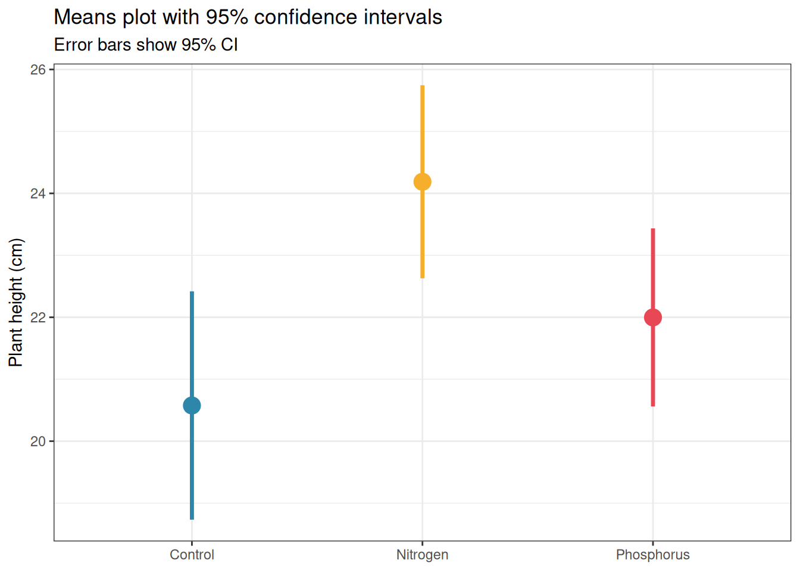
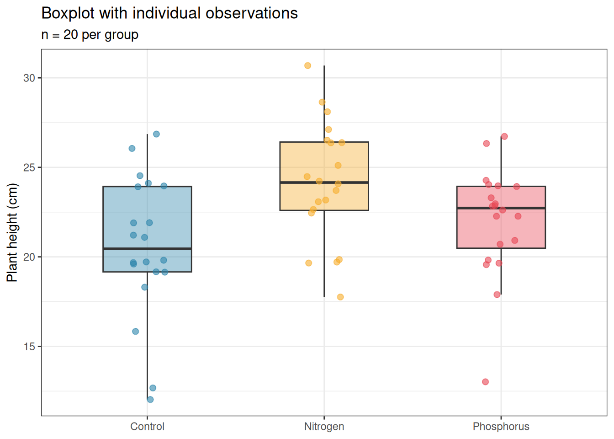
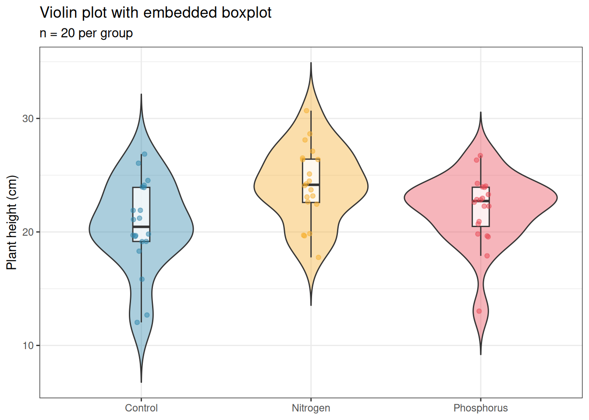
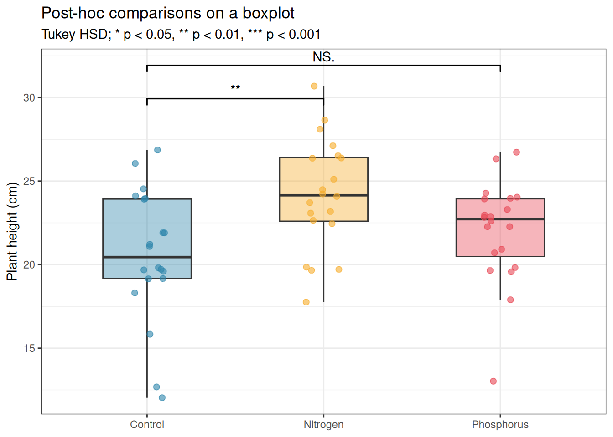
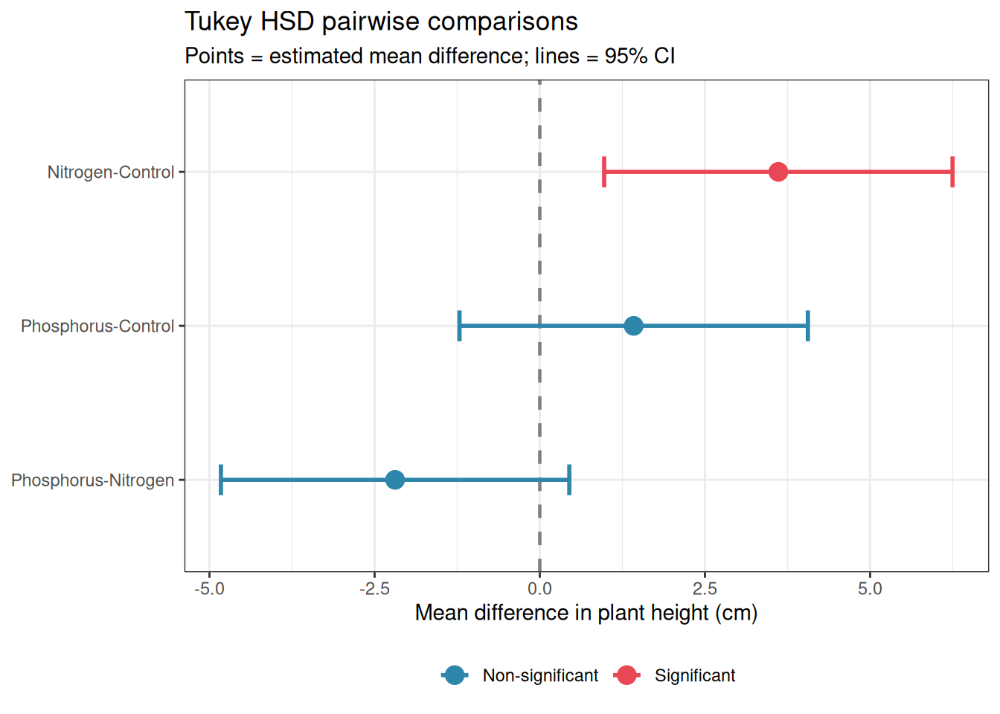

Running a correct analysis is necessary but not sufficient. The analysis must also be reported in a way that allows readers to evaluate the evidence, reproduce the findings, and build on the work. Poorly reported statistics are a persistent problem in the biological literature, not always because the analysis was wrong, but because essential information was omitted, the visualisation was misleading, or the narrative obscured rather than illuminated the findings.
This chapter covers what must appear in a paper, how to visualise results honestly and effectively, and provides templates for the Methods and Results sections that can be adapted for any ANOVA design covered in this book.
13.1 What Must Appear in a Paper
13.1.1 The Minimum Reporting Standard
Every reported ANOVA result should contain, at minimum, the following information:
The test statistic and its degrees of freedom. For an \(F\) test: \(F_{df_1, df_2} = x.xx\). Both degrees of freedom are required, the numerator (\(df_1\)) and the denominator (\(df_2\)). A reported \(F\) without degrees of freedom cannot be verified or reproduced.
The p-value. Report exact p-values to two or three significant figures (e.g. \(p = 0.023\), \(p = 0.003\)), not as inequalities unless the value is below a reporting threshold (e.g. \(p < 0.001\)). The convention of reporting \(p < 0.05\) as “significant” and \(p > 0.05\) as “not significant” without the actual value discards information that readers need to form their own judgements.
An effect size with a confidence interval. As Chapter sec-chap3 demonstrated, the p-value conflates the size of the effect with the size of the study. Always accompany the \(F\) test with \(\eta^2\), \(\omega^2\), or partial \(\omega^2\) as appropriate, with a 95% confidence interval. For pairwise comparisons, report the estimated difference (or ratio for log-link models) and its confidence interval.
The sample size. Total \(N\) and the number of observations per group. For nested or hierarchical designs, report the sample size at every relevant level, the number of subjects, the number of observations per subject, and the number of groups.
The software and packages used. Specify R version and the version of every package used in the analysis. Results from lme4, glmmTMB, emmeans, and effectsize can differ across versions.
13.1.2 Reporting Mixed Models
Mixed models require additional reporting beyond standard ANOVA:
The full model formula, ideally in R notation.
The estimation method (REML or ML) and the rationale.
The method used for degrees of freedom and p-values (Satterthwaite or Kenward-Roger).
The variance components (\(\hat{\sigma}^2_b\) and \(\hat{\sigma}^2_\varepsilon\)) and the ICC.
The conditional and marginal \(R^2\) values.
13.1.3 Reporting GLMMs
For GLMMs, report additionally:
The response distribution and link function.
Evidence that the model was adequately specified (DHARMa diagnostics, overdispersion ratio).
Coefficients on both the link scale (for statistical inference) and the response scale (for biological interpretation), e.g. log-odds ratios and odds ratios for binomial models, log-rate ratios and rate ratios for Poisson models.
For zero-inflated models, report the zero-inflation component separately from the conditional component.
13.1.4 Common Reporting Mistakes
The following are frequently seen in published papers and should be avoided:
Mistake
Correct practice
Reporting only \(p < 0.05\)
Report exact \(p\)-value
Omitting degrees of freedom
Always report \(F_{df_1, df_2}\)
No effect size
Report \(\omega^2\) or partial \(\omega^2\)
“Mean ± SE” without stating what SE means
State standard error of the mean explicitly
No post-hoc method specified
Name the correction (Tukey, Holm, etc.)
No software version
Cite R version and package versions
No model formula for mixed models
Include full lmer() formula
Reporting ANOVA without assumption checks
Report key diagnostics
13.2 Visualisation
Good visualisation shows the data, not just the summary. The most common visualisation mistake in biology is replacing individual observations with bars and error bars, a format that hides the distribution of the data and makes it impossible to assess assumptions visually. The sections below progress from least to most informative.
13.2.1 Means Plots
Means plots display the group mean with an error bar representing either the standard error or the 95% confidence interval. They are familiar and compact but convey almost no information about the distribution of the data.
library(ggplot2)set.seed(42)n <-20group <-factor(rep(c("Control", "Nitrogen", "Phosphorus"), each = n),levels =c("Control", "Nitrogen", "Phosphorus") )y <-c(rnorm(n, 20, 3), rnorm(n, 25, 3), rnorm(n, 22, 3))df <-data.frame(y, group)# Compute means and CIssumm <-do.call(rbind, lapply(levels(group), function(g) { x <- df$y[df$group == g] m <-mean(x) se <-sd(x) /sqrt(length(x)) ci <-qt(0.975, df =length(x) -1) * sedata.frame(group = g, mean = m, lower = m - ci, upper = m + ci)}))summ$group <-factor(summ$group, levels =levels(group))ggplot(summ, aes(x = group, y = mean, colour = group)) +geom_pointrange(aes(ymin = lower, ymax = upper), size =1, linewidth =1.2) +scale_colour_manual(values =c("#2E86AB", "#F6AE2D", "#E84855")) +labs(title ="Means plot with 95% confidence intervals",subtitle ="Error bars show 95% CI",x =NULL, y ="Plant height (cm)") +theme_bw() +theme(legend.position ="none")

Figure 13.1: Means plot with 95% confidence intervals for the fertiliser experiment. While compact and familiar, this format hides the distribution of the data, two datasets with identical means and CIs can have completely different distributions. Use with caution and always accompany with a more informative display.
If you use a means plot, always:
State explicitly what the error bars represent (SE, SD, or CI).
Use 95% CIs rather than SE: CIs are directly interpretable for inference, SE bars are not.
Accompany with the sample size per group in the figure caption.
13.2.2 Boxplots
Boxplots display the median, interquartile range, and outliers. They convey more information than a means plot and are appropriate for moderate sample sizes (\(n \geq 10\) per group). For small samples they can be misleading, a boxplot of five points looks authoritative but represents very little data.
ggplot(df, aes(x = group, y = y, fill = group)) +geom_boxplot(alpha =0.4, outlier.shape =NA, width =0.5) +geom_jitter(width =0.1, size =2, alpha =0.6, aes(colour = group)) +scale_fill_manual(values =c("#2E86AB", "#F6AE2D", "#E84855")) +scale_colour_manual(values =c("#2E86AB", "#F6AE2D", "#E84855")) +labs(title ="Boxplot with individual observations",subtitle =paste0("n = ", n, " per group"),x =NULL, y ="Plant height (cm)") +theme_bw() +theme(legend.position ="none")

Figure 13.2: Boxplot with individual observations overlaid for the fertiliser experiment. The boxplot shows the median, interquartile range, and outliers; the jittered points show every individual observation. This combination is the minimum acceptable display for biological data.
Always overlay the individual data points when \(n < 50\) per group. The outlier.shape = NA argument removes the duplicate outlier points that geom_boxplot would otherwise add, since all points are shown by geom_jitter, the boxplot outliers become redundant and confusing.
13.2.3 Violin Plots
Violin plots show the full distribution as a kernel density estimate, mirrored to form a symmetric shape. They are more informative than boxplots for large samples (\(n > 30\) per group) where the shape of the distribution matters.
ggplot(df, aes(x = group, y = y, fill = group)) +geom_violin(alpha =0.4, trim =FALSE) +geom_boxplot(width =0.1, fill ="white", outlier.shape =NA, alpha =0.8) +geom_jitter(width =0.05, size =1.5, alpha =0.5, aes(colour = group)) +scale_fill_manual(values =c("#2E86AB", "#F6AE2D", "#E84855")) +scale_colour_manual(values =c("#2E86AB", "#F6AE2D", "#E84855")) +labs(title ="Violin plot with embedded boxplot",subtitle =paste0("n = ", n, " per group"),x =NULL, y ="Plant height (cm)") +theme_bw() +theme(legend.position ="none")

Figure 13.3: Violin plot with embedded boxplot and individual observations for the fertiliser experiment. The violin shape shows the full distribution; the inner boxplot provides the summary statistics; the points show individual observations. This is the most complete single-panel display for group comparisons.
13.2.4 Adding Significance Annotations
Post-hoc comparison results can be added directly to the plot using the ggpubr or ggsignif packages:
# install.packages("ggsignif") if neededlibrary(ggsignif)# Run Tukey HSD firstfit <-aov(y ~ group, data = df)tukey <-TukeyHSD(fit)print(tukey)
#> Tukey multiple comparisons of means
#> 95% family-wise confidence level
#>
#> Fit: aov(formula = y ~ group, data = df)
#>
#> $group
#> diff lwr upr p adj
#> Nitrogen-Control 3.611265 0.974554 6.2479751 0.0047467
#> Phosphorus-Control 1.421508 -1.215203 4.0582183 0.4025112
#> Phosphorus-Nitrogen -2.189757 -4.826467 0.4469538 0.1218054
ggplot(df, aes(x = group, y = y, fill = group)) +geom_boxplot(alpha =0.4, outlier.shape =NA, width =0.5) +geom_jitter(width =0.1, size =2, alpha =0.6, aes(colour = group)) +geom_signif(comparisons =list(c("Control", "Nitrogen"), c("Control", "Phosphorus")),map_signif_level =TRUE,tip_length =0.02,y_position =c(29, 31) ) +scale_fill_manual(values =c("#2E86AB", "#F6AE2D", "#E84855")) +scale_colour_manual(values =c("#2E86AB", "#F6AE2D", "#E84855")) +labs(title ="Post-hoc comparisons on a boxplot",subtitle ="Tukey HSD; * p < 0.05, ** p < 0.01, *** p < 0.001",x =NULL, y ="Plant height (cm)") +theme_bw() +theme(legend.position ="none")

Figure 13.4: Boxplot with Tukey HSD significance annotations. Only significant comparisons are annotated; non-significant pairs are left unannotated. The annotation style follows the convention of placing brackets between compared groups with the adjusted p-value or significance stars.
13.2.5 Forest Plots for Multi-Study or Multi-Comparison Results
Forest plots display point estimates and confidence intervals for multiple comparisons or studies simultaneously, making it easy to compare effect sizes and their uncertainty across a set of results. They are standard in meta-analysis but are equally valuable for displaying a set of post-hoc comparisons or the results of multiple related ANOVA models.
#> Warning: `geom_errorbarh()` was deprecated in ggplot2 4.0.0.
#> ℹ Please use the `orientation` argument of `geom_errorbar()` instead.
#> `height` was translated to `width`.

Figure 13.5: Forest plot of Tukey HSD pairwise comparisons from the fertiliser experiment. Each row is one comparison; points show the estimated mean difference; horizontal lines show the 95% CI. The vertical dashed line at zero marks no difference, comparisons whose CI does not cross zero are significant after Tukey correction.
Forest plots become particularly valuable when you have many comparisons to display, for example, the results of a two-way ANOVA with post-hoc comparisons within each level of one factor, or the treatment effects from the same model fitted to multiple response variables. They are superior to tables for communicating patterns across many estimates because the eye can immediately detect which estimates are large, which are imprecise, and which are consistent in direction.
13.2.6 Choosing the Right Visualisation
Situation
Recommended plot
\(n < 10\) per group
Dot plot with all points shown
\(10 \leq n < 30\)
Boxplot with jittered points
\(n \geq 30\)
Violin plot with embedded boxplot
Many groups (\(k > 6\))
Horizontal boxplot or dot plot
Longitudinal data
Line plot with individual trajectories
Post-hoc comparisons
Forest plot
Interaction effects
Interaction plot with CIs
Effect sizes across studies
Forest plot
13.3 A Template for Methods and Results Sections
13.3.1 One-Way ANOVA
Methods:
The effect of fertiliser type (control, nitrogen, phosphorus) on plant height was analysed using one-way ANOVA. Residual normality was assessed using a Q-Q plot and the Shapiro-Wilk test; homogeneity of variance was assessed using Levene’s test. Pairwise comparisons between groups were conducted using Tukey’s HSD test. Effect size was quantified using omega-squared (\(\omega^2\)) with 95% confidence intervals computed using the effectsize package (Ben-Shachar, Lüdecke, and Makowski 2020). All analyses were conducted in R version x.x.x (R2024?) using the car(Fox2019?) and effectsize packages.
Results:
Fertiliser type had a significant effect on plant height (\(F_{2,57} = x.xx\), \(p = x.xxx\), \(\omega^2 = x.xx\), 95% CI: \([x.xx, x.xx]\)). Post-hoc Tukey HSD comparisons revealed that nitrogen-treated plants were significantly taller than control plants (mean difference = \(x.x\) cm, 95% CI: \([x.x, x.x]\), \(p = x.xxx\)) and phosphorus-treated plants (mean difference = \(x.x\) cm, 95% CI: \([x.x, x.x]\), \(p = x.xxx\)). Phosphorus-treated and control plants did not differ significantly (mean difference = \(x.x\) cm, 95% CI: \([x.x, x.x]\), \(p = x.xxx\)). Group means (± SD) were \(x.x
\pm x.x\) cm (control), \(x.x \pm x.x\) cm (nitrogen), and \(x.x \pm x.x\) cm (phosphorus).
13.3.2 Two-Way ANOVA
Methods:
The effects of fertiliser type (control, nitrogen, phosphorus) and watering regime (dry, watered) on plant yield were analysed using a two-way ANOVA with Type III sums of squares (using sum-to-zero contrasts), fitted with the lm() function in R and tested using car::Anova()(Fox2011?). Residual diagnostics were conducted as above. The interaction was examined first; where significant, simple main effects were tested within each level of the other factor using emmeans(Lenth and Piaskowski 2026) with Tukey adjustment.
Results:
A significant fertiliser \(\times\) watering interaction was found (\(F_{2,54} = x.xx\), \(p = x.xxx\), partial \(\omega^2
= x.xx\)). Simple effects analysis revealed that the effect of fertiliser differed between dry and watered conditions [describe the specific pattern]. Main effects of fertiliser (\(F_{2,54} = x.xx\), \(p = x.xxx\)) and watering (\(F_{1,54} = x.xx\), \(p = x.xxx\)) are not interpreted independently given the significant interaction.
13.3.3 Linear Mixed Model
Methods:
Recovery scores were analysed using a linear mixed-effects model with treatment (control vs intervention) and time (weeks 0, 4, 8, 12) as fixed effects, their interaction, and a random intercept for subject, fitted by REML using lme4 version x.x.x (Bates et al. 2015). Degrees of freedom were approximated using the Kenward-Roger method via lmerTest(Kuznetsova, Brockhoff, and Christensen 2017). Model assumptions were assessed through Q-Q plots and residual vs fitted plots of the model residuals. Marginal and conditional \(R^2\) values were computed using MuMIn(Barton2023?).
Results:
The treatment \(\times\) time interaction was significant (\(F_{x.x, x.x} = x.xx\), \(p = x.xxx\), partial \(\eta^2
= x.xx\)), indicating that the trajectory of recovery differed between treatment groups. The intervention group showed a steeper decline in resting heart rate over the 12-week period than the control group [describe the pattern with reference to the figure]. The main effect of time was also significant (\(F_{x.x, x.x} = x.xx\), \(p = x.xxx\), partial \(\eta^2 = x.xx\)), confirming that heart rate declined over the study period in both groups. The conditional \(R^2\) was \(x.xx\), with subject-level random effects accounting for an additional \(x.xx\) of variance beyond the fixed effects (\(R^2_m = x.xx\)).
13.3.4 GLMM
Methods:
Bird abundance counts were analysed using a negative binomial generalised linear mixed model with a log link, landscape type as a fixed effect, and a random intercept for site, fitted using glmmTMB version x.x.x (Brooks et al. 2017). A zero-inflated negative binomial model was also fitted and compared using AIC and a likelihood ratio test. Model adequacy was assessed using simulation-based quantile residuals via DHARMa version x.x.x (Hartig 2026). Estimated marginal means and pairwise contrasts (Tukey adjusted) were obtained using emmeans(Lenth2023?). Effect sizes were computed as marginal and conditional \(R^2\) using MuMIn(Barton2023?).
Results:
The negative binomial GLMM was retained over the zero-inflated alternative (\(\Delta\text{AIC} = x.x\), LRT: \(\chi^2_x = x.xx\), \(p = x.xxx\)). Landscape type had a significant effect on bird abundance (\(\chi^2_2 = x.xx\), \(p = x.xxx\), marginal \(R^2 = x.xx\)). Estimated mean counts per transect were \(x.xx\) (95% CI: \([x.xx, x.xx]\)) in the agricultural matrix, \(x.xx\) (\([x.xx, x.xx]\)) in fragmented forest, and \(x.xx\) (\([x.xx, x.xx]\)) in continuous forest. Pairwise Tukey comparisons revealed [describe significant differences]. Site-level variation accounted for an additional \(x.xx\) of total variance (conditional \(R^2 = x.xx\)).
13.3.5 Inline Reporting with Quarto
Throughout this book, results have been reported using inline R code to ensure that values in the text are always consistent with the analysis. The following pattern should be used in every Quarto document:
Fertiliser type had a significant effect on plant height (\(F_{2,57} = 5.51\), \(p = 0.006\), \(\omega^2 = 0.13\)).
This pattern eliminates transcription errors entirely, the reported values are computed directly from the fitted model and updated automatically whenever the analysis changes.
Modern Analysis of VarianceModern Analysis of Variance14Reproducible Analysis with R12Experimental Design PrinciplesPrefaceFoundations1What is ANOVA, Really ?2The AssumptionsClassical ANOVA Models3One-Way ANOVA4Multiple Comparisons5Two-Way ANOVA and Factorial Designs6Repeated Measures ANOVA7Split-Plot and Nested DesignsThe Modern Framework8ANOVA as a Linear Model9Mixed-Effects Models: Beyond Classical ANOVA10When Assumptions Fail, What to Do ?11Generalised Linear Mixed ModelsGood Practice and Reproductibility12Experimental Design Principles13Reporting ANOVA Results14Reproducible Analysis with RReferencesAppendicesAThe Maths of the BookBDatasets and R PackagesCDecision Trees for Model SelectionGood Practice and Reproductibility13Reporting ANOVA Results
Modern Analysis of Variance by Anicet Ebou.
13Reporting ANOVA Results – Modern Analysis of Variance13Reporting ANOVA Results – Modern Analysis of Variance13Reporting ANOVA Results – Modern Analysis of VarianceModern Analysis of Variance
Bates, Douglas, Martin Mächler, Ben Bolker, and Steve Walker. 2015. “Fitting Linear Mixed-Effects Models Using Lme4.”Journal of Statistical Software 67 (October): 1–48. https://doi.org/10.18637/jss.v067.i01.
Ben-Shachar, Mattan S., Daniel Lüdecke, and Dominique Makowski. 2020. “Effectsize: Estimation of Effect Size Indices and Standardized Parameters.”Journal of Open Source Software 5 (56): 2815. https://doi.org/10.21105/joss.02815.
Brooks, Mollie E., Kasper Kristensen, Koen J. van Benthem, Arni Magnusson, Casper W. Berg, Anders Nielsen, Hans J. Skaug, Martin Mächler, and Benjamin M. Bolker. 2017. “glmmTMB Balances Speed and Flexibility Among Packages for Zero-inflated Generalized Linear Mixed Modeling.”The R Journal 9 (2): 378–400. https://doi.org/10.32614/RJ-2017-066.
Kuznetsova, Alexandra, Per B. Brockhoff, and Rune H. B. Christensen. 2017. “lmerTest Package: Tests in Linear Mixed Effects Models.”Journal of Statistical Software 82 (December): 1–26. https://doi.org/10.18637/jss.v082.i13.
Lenth, Russell V., and Julia Piaskowski. 2026. Emmeans: Estimated Marginal Means, Aka Least-Squares Means. Manual.